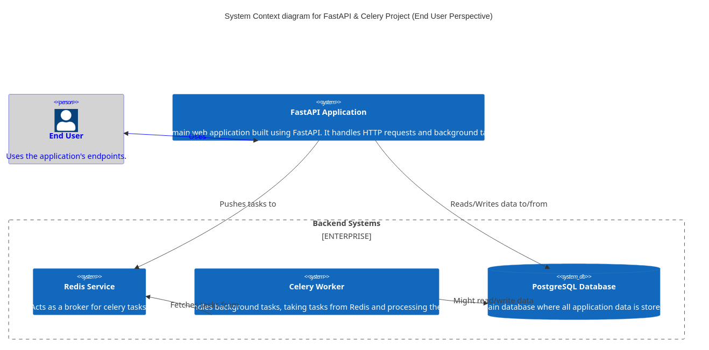
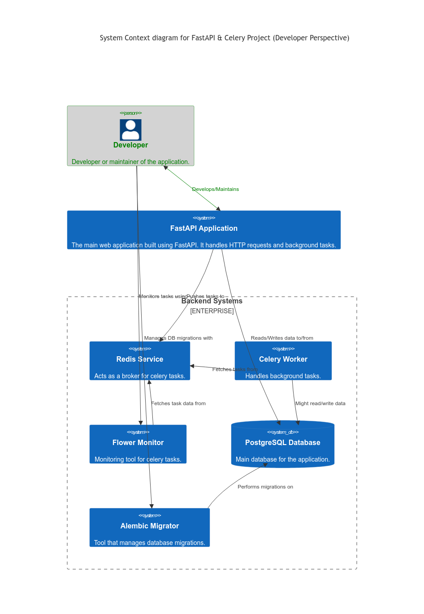
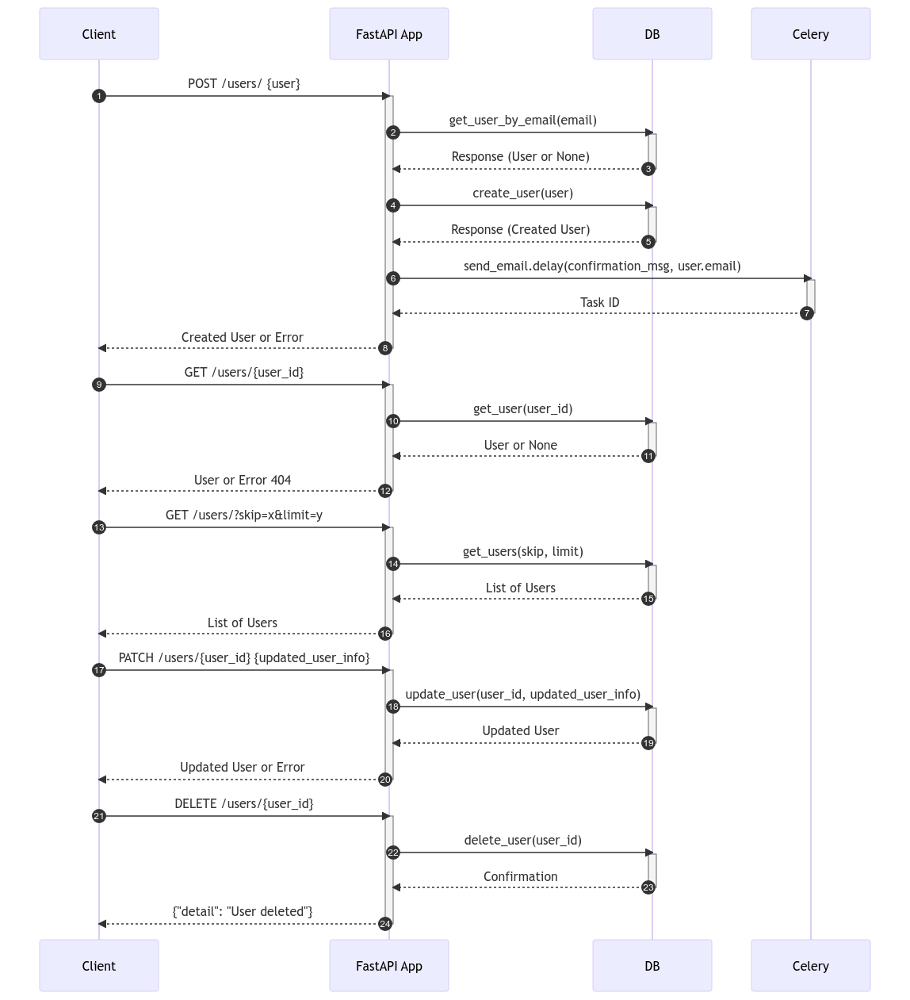

Lab 2: FastAPI and Celery Integration Documentation¶
This documentation covers the integration of FastAPI with Celery, alongside tools like SQLAlchemy for database operations and Alembic for migration handling.
Table of Contents¶
- Project Structure
- Docker Compose Configuration
- Web Service
- Redis Service
- Celery Worker Service
- Flower Monitoring Service
- Database Service
- Setting Up and Running
Certainly! Here’s a dedicated section that explains the new structure of your project.
Designs:¶
User perspective¶

Developer perspective¶

Flow diagram¶
This app provides a simple api to manage users, when a new user is created, a new task to send registration email is added to celery queue

1. Project Structure Overview¶
In this laboratory exercise, we’ve introduced a more framework-centric structure that promotes modular design, scalability, and ease of maintenance. Let’s break down the different components:
Directory Structure:¶
.
├── alembic/
├── project/
│ ├── database.py
│ ├── celery_utils.py
│ ├── users/
│ └── config.py
├── scripts/
├── .env.dev
├── Dockerfile.dev
├── docker-compose.yaml
| alembic.ini
├── main.py
└── requirements.txt
Descriptions:¶
- alembic/:
-
This directory is dedicated to Alembic, our database migration tool. It contains migration scripts, configurations, and version history. This helps in maintaining a versioned history of our database schema changes.
-
project/:
- database.py: This module sets up and configures our database connection and session using SQLAlchemy.
- celery_utils.py: Utility for setting up and configuring the Celery instance for background task processing.
- users/: A module-based directory focusing on user-related operations. This promotes modular design where each module (like users) can have its own models, views, and controllers.
- schemas.py: Pydantic schemas for user-related requests and responses.
- tasks.py: Celery tasks related to the users module.
- crud.py: CRUD operations for the user model.
- models.py: SQLAlchemy models for users.
-
config.py: Configuration settings for the project, making use of environment variables or default values.
-
scripts/:
-
Contains shell scripts which might be useful for bootstrapping, deployment, or task automation. For instance,
start_flower.shis present to bootstrap the Flower monitor for Celery. -
.env.dev:
-
Environment-specific (development in this case) variables are stored here. They are used by Docker and can also be read within the application to configure certain settings.
-
Dockerfile.dev:
-
The Docker configuration file for creating a development environment container for our application.
-
docker-compose.yaml:
-
Docker Compose configuration that helps in defining and running multi-container Docker applications. This is where services like the web application, database, Celery worker, and others are defined.
-
main.py:
- The entry point to our FastAPI application. This is where the application instance is created and routes are included.
2. Docker Compose Configuration¶
The docker-compose.yaml file contains definitions for various services:
- web: The main FastAPI application.
- redis: The Redis broker for Celery.
- celery_worker: The Celery worker service.
- flower: A monitoring tool for Celery.
- db: PostgreSQL database service.
3. Web Service¶
The web service runs the FastAPI application:
- Uses the
Dockerfile.devfor building the Docker image. - Sets the command to run FastAPI with
uvicorn. - Maps port
8010on the host to port8000on the container. - Depends on the
redisanddbservices.
4. Redis Service¶
Redis is used as the message broker for Celery:
- Uses the official Redis image (
redis:7-alpine).
5. Celery Worker Service¶
This service processes tasks asynchronously:
- Uses the same Docker image as the web service.
- Runs the Celery worker with the appropriate configurations.
- Depends on the
redisservice for task management.
6. Flower Monitoring Service¶
Flower is used to monitor and manage Celery tasks:
- Uses the same Docker image as the web service.
- Runs a shell script to initiate Flower.
- Maps port
5550on the host to5555on the container. - Depends on the
redisservice.
7. Database Service¶
The database service uses PostgreSQL:
- Utilizes the
postgres:12Docker image. - Stores data in a Docker volume named
postgres_datato persist data. - Sets up the database with provided environment variables (username, password, dbname).
8. Setting Up and Running¶
To get the project up and running:
- Install Docker and Docker Compose.
- Navigate to the project directory.
- Run
docker-compose up -dto start all services in detached mode. - Access the FastAPI application at
http://localhost:8010. - Monitor Celery tasks using Flower at
http://localhost:5550.
9. Alembic: Database Migrations¶
Introduction¶
Alembic is a lightweight database migration tool for usage with the SQLAlchemy database toolkit. It provides a way to programmatically manage changes in your database schema, ensuring that your database schema is in sync with your SQLAlchemy models. By using migrations, you can maintain a history of changes, which can be very helpful for things like data integrity, database versioning, and collaborative development.
Setup¶
Your project already includes an alembic/ directory, which contains configuration, migration scripts, and version history. The primary configuration is in alembic.ini, which references alembic/env.py to determine the database connection, dependencies, and more.
Generating Auto-Migrations¶
-
Auto-generate Migration Script:
For example, if you added a new column to a user model, you might run:
After modifying your SQLAlchemy models, you can auto-generate migration scripts by running:
This command will detect changes in your models and generate a new migration script underalembic/versions/. -
Review the Migration Script:
It’s a good practice to review the generated migration script to ensure it captures all the changes and to make any necessary tweaks.
Applying Migrations¶
-
Upgrading to the Latest Migration:
This command will apply all pending migrations up to the latest version.
To apply the migrations and update the database schema, run:
-
Downgrading Migrations:
To downgrade to a specific migration version, replace
If you need to undo a migration, you can downgrade. For example, to undo the last migration, you can run:
-1with the version number (found in the filename of the migration script).